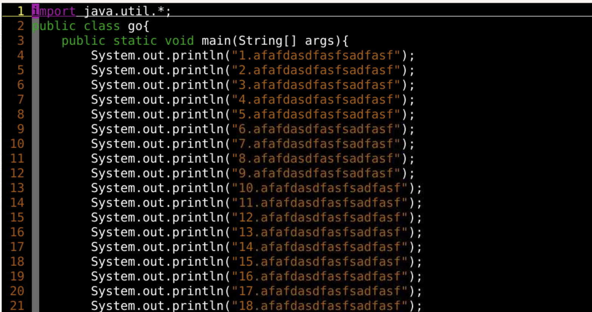
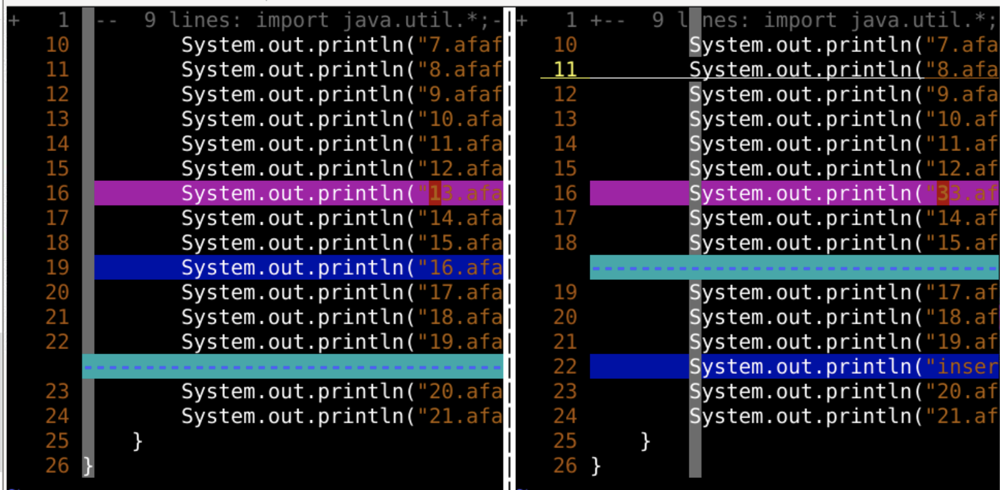

:windo:bufdo:argdo{cmd}可以用｜按顺序增加update 自动更新:set autowrite 自动写入:set hidden 可以隐藏未保存 bufferwindow、buffers、argumentsgo.java
go.java复制粘贴出一个副本:saveas go2.java:e go2.javavimdiff go.java go2.javavimdiff 就是专门用比较的
----------------------:vi go.java :vertical diffsplit go2.java 可以开启比较vertical被省略scrollbind]c 下一条修改[c 上一条修改[] 指的是跳转c 指的是 change 变化dodiff obtaindpdiff put]c 下一条修改[c 上一条修改]m 下一条修改[m 上一条修改